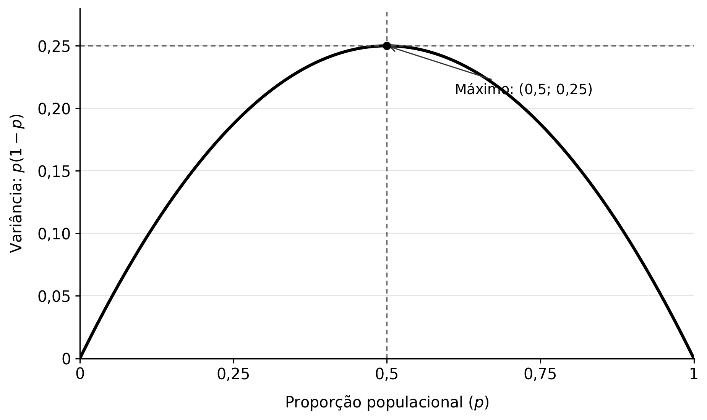

Precisão e Tamanho de Amostra
Como determinar o tamanho da amostra para estimativas confiáveis
ESTAT0078 – Inferência I
Prof. Dr. Sadraque E. F. Lucena
http://sadraquelucena.github.io/inferencia1
Introdução
- O cálculo do tamanho da amostra é a resposta para a pergunta: “Quantos dados eu preciso coletar para garantir que meu erro não ultrapasse um limite pré-estabelecido?”
- Esse cálculo envolve:
- Custo (\(n\)): Tempo e dinheiro.
- Confiança (\(1-\alpha\)): Certeza no método.
- Precisão (\(E\)): Margem de erro aceitável.
Não podemos ter precisão infinita com orçamento finito. Definir o tamanho da amostra é a arte de equilibrar essa equação.
Erro Máximo (\(E\))
Um intervalo de confiança simétrico é dado por: \[\text{Estimativa} \pm \text{Margem de Erro}.\]
Toda fórmula para determinar \(n\) deriva da Margem de Erro (\(E\)) do Intervalo de Confiança.
O que fazemos e fixar o Erro e isolar \(n\).
Tamanho de Amostra para a Média Populacional (\(\mu\))
Para uma população infinita ou muito grande, o IC é dado por \[IC = \overline{X} \pm E \quad \text{onde} \quad E = Z_{\alpha/2} \frac{\sigma}{\sqrt{n}}.\]
Isolando \(n\), temos: \[n = \left( \frac{z_{\alpha/2} \cdot \sigma}{E} \right)^2\]
Tamanho de Amostra para a Média Populacional (\(\mu\))
- Então, para determinarmos o tamanho de amostra para estimar a média populacional \(\mu\) precisamos de:
- Nível de Confiança (\(1-\alpha\)): Determina o valor de \(z_{\alpha/2}\) (ex: 1,96 para 95%).
- Erro Máximo Tolerado (\(E\)): O quanto aceitamos errar para mais ou para menos (na mesma unidade dos dados).
- Variabilidade da População (\(\sigma\)): Este é o maior desafio. Se não conhecemos \(\sigma\), usamos:
- Um desvio padrão de um estudo piloto.
- Dados da literatura ou histórico.
- Uma estimativa grosseira: \(\sigma \approx \frac{\text{Amplitude}}{4}\).
Impacto da Variância (\(\sigma^2\))
Observe que na fórmula \(n\) é diretamente proporcional a \(\sigma^2\).
Ou seja, a necessidade de dados cresce com o quadrado da variabilidade.
Isto é, se a variância do fenômeno dobra, precisamos do dobro de dados. Se o desvio padrão dobra, precisamos de quatro vezes mais dados.
Implicação Atuarial: Carteiras de seguros com alta volatilidade (caudas pesadas) exigem bancos de dados muito grandes para que a estimativa da média seja confiável. Fenômenos estáveis exigem poucos dados.
Exemplo 17.1
Um auditor precisa estimar o valor médio das notas fiscais emitidas por uma empresa com erro máximo de R$ 5,00 e 95% de confiança. Um estudo piloto indicou um desvio padrão de R$ 50,00. Qual deve ser o tamanho de amostra que ele deve usar para estimar a média?
Exemplo 17.2
Uma fábrica de cabos de aço quer estimar a resistência média à ruptura. Sabe-se que \(\sigma = 300\) kgf. O engenheiro aceita um erro de 20 kgf, mas exige uma confiança altíssima de 99%. Qual deve ser o tamanho de amostra para estimar essa média?
Reflexão: Testes destrutivos são caros. Será que vale a pena subir de 95% para 99% e gastar muito mais material? Essa é a decisão gerencial.
Tamanho de Amostra para a Proporção (\(p\))
- Partindo do Erro de Wald: \(E = Z_{\alpha/2} \sqrt{\frac{p(1-p)}{n}}\).
- Isolando \(n\):
\[n = \frac{Z_{\alpha/2}^2 \cdot p(1-p)}{E^2}\]
- Dilema Circular: para calcular \(n\), precisamos de \(p\). Mas \(p\) é justamente o que queremos estimar com a pesquisa!
Solucionando o Dilema da Proporção
Temos dois caminhos para definir o valor de \(p\) na fórmula:
Cenário A: Informação Prévia
- Temos uma pesquisa antiga ou estudo similar (ex.: que indicou \(p \approx 0{,}20\)).
- Usamos esse valor na fórmula.
Cenário B: Sem Informação (Estimativa Conservadora)
- Não sabemos nada sobre \(p\).
- Assumimos o pior cenário de variância.
- A variância \(p(1-p)\) é máxima quando \(p = 0{,}5\) (\(0{,}5 \times 0{,}5 = 0{,}25\)).

Estimativa Conservadora (\(p=0{,}5\))
Ao usar \(p=0{,}5\), garantimos o tamanho de amostra máximo necessário.
\[n_{\text{cons}} = \frac{Z_{\alpha/2}^2 \cdot 0,25}{E^2}\quad\text{ou}\quad n_{\text{cons}}=\frac{Z_{\alpha/2}^2}{4 \,E^2}\]
- Vantagem: Garante a precisão desejada independente do valor real de \(p\).
- Desvantagem: Pode superestimar o tamanho da amostra (custo maior), especialmente se o \(p\) real for extremo (perto de 0 ou 1).
Exemplo 17.3
Um instituto vai realizar uma pesquisa em uma cidade onde não há histórico de intenção de votos. Deseja-se uma margem de erro de 3% (0,03) com 95% de confiança. Qual deve ser o número de eleitores entrevistados?
Exemplo 17.4
Uma fábrica de peças automotivas quer estimar a proporção de peças defeituosas. O histórico mostra que a taxa de defeitos nunca passou de 10% (\(p \approx 0,10\)). Qual deve ser o tamanho de amostra para se ter um erro máximo de 2% com 95% de confiança?
Relações de Trade-off
| Parâmetro | Ação | Efeito em \(n\) | Natureza |
|---|---|---|---|
| Erro (\(E\)) | Reduzir (mais precisão) | Aumenta (\(\uparrow \uparrow\)) | Quadrática (inversa) |
| Confiança | Aumentar (95% \(\to\) 99%) | Aumenta (\(\uparrow\)) | Não-linear |
| Variância | Aumentar (mais ruído) | Aumenta (\(\uparrow\)) | Linear (com \(\sigma^2\)) |
Regra de Bolso: Para reduzir o erro pela metade, você precisa quadruplicar o tamanho da amostra.
Consideração: População Finita (\(N\))
Tudo o que vimos assume população infinita (ou muito grande).
Se a população for pequena (ex: \(N < 10.000\)), aplicamos a Correção de População Finita: \[n_{\text{final}} = \frac{n}{1 + \frac{n - 1}{N}}\]
Isso reduz o tamanho da amostra necessário, pois a população se “esgota” conforme amostramos.
Regra de bolso: Essa fórmula deve ser usada quando \(n/N > 0{,}05\) (ou seja, se a amostra representa mais de 5% da população).
Fim